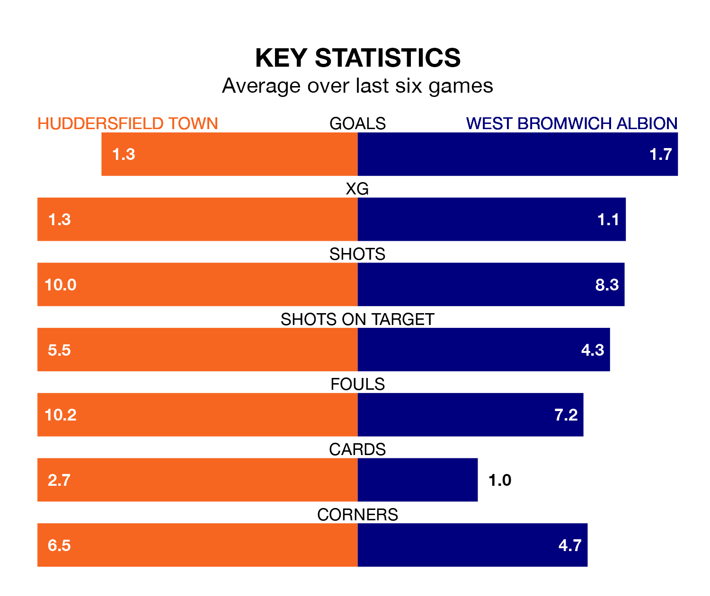

West Bromwich Albion travel to Huddersfield Town on Sunday lunchtime in the EFL Championship.
The visitors come into the game on the back of a draw in their last match, having tied with Queens Park Rangers 2-2 away, with goals from Michael Andrew Johnston and Grady Diangana.
The Terriers, meanwhile, lost their last match, 1-0 against Cardiff City.
In Alex Palmer, West Bromwich can rely on one of the league's safest pair of hands. He has kept 15 clean sheets in his 36 appearances this season, and no 'keeper has prevented the opposition scoring more often in the EFL Championship.
In Huddersfield's net, Lee Nicholls has five clean sheets in 28 games. He has conceded a goal every 61 minutes, 70% more often than the 101 minutes between goals for Palmer.
Town are 22nd in the table after 36 games, of which they have won eight and drawn 14, earning 38 points.
Albion are 17 places ahead of the Terriers in fifth, with 17 wins and nine draws putting them on 60 points.
With 41 goals in 36 games so far this season, the hosts are scoring at below the league average rate with 1.1 goals per game. And they are conceding more than average, letting in 57 goals at a rate of 1.6 per game.
The Baggies, meanwhile, are above average scorers, with 1.5 goals per game, compared to a league average of 1.4. They have conceded 1.0 goal per game.
In the last 10 years, Huddersfield and West Bromwich have played each other on nine occasions. Huddersfield won five of them, West Bromwich two, and they drew twice.
On average, the Terriers scored 1.6 goals and the Baggies 1.3 in those matches.
Their last meeting was on September 2, when Huddersfield won 2-1 away.
Huddersfield are in mixed form in the EFL Championship, with two wins and a draw from their last six games.
With three wins and two draws over that period, the away side's form is better – they have taken 11 points from 18, compared to Huddersfield's seven.
Sunday's match will be refereed by David Webb, who has taken charge of 24 EFL Championship games so far this season, issuing one red card and booking 99 players. He has awarded four penalties.
The last Huddersfield game Webb refereed was a 5-3 away loss to Southampton on February 10. His last West Bromwich match was their 1-0 win at home against Birmingham City on February 3.
Updated: 09:34 (UTC), 08/03/24